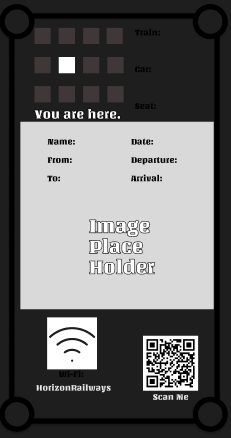

Research & Design

Developed a cohesive brand style guide including colors, typography, and visual language for Horizon Railways.

Created high-fidelity mockups of the mobile app to showcase layout, interaction, and visual hierarchy.